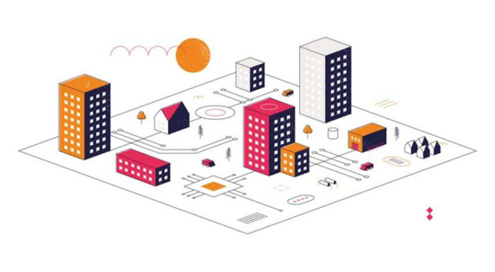

ongoing research projects
I. tax and technology.
My dissertation explores the spatialization of accounting dynamics such as valuation, liqudity, and depreciation. How does real estate accounting and the tax code function as a technology that spatializes capital and difference in U.S. cities? . II. ai in banking.
I have studied the application of emerging technology in banking. Drawing from my research on alternative credit scores, I show how machine learning produces a vision of risk rooted in social difference that allows fintech firms to elide regulatory capture and authorizes banks to invest in unsecured consumer debt.